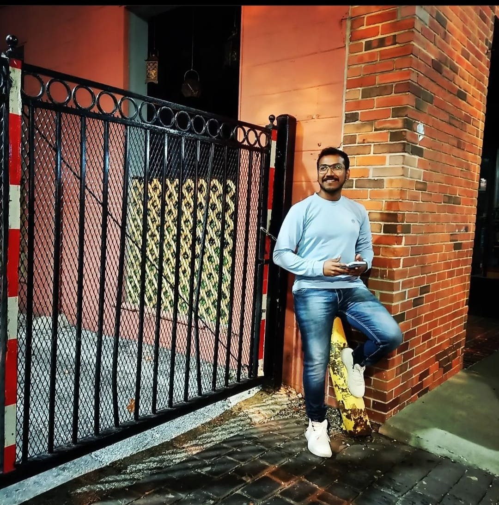

Vamsi
|
 |
A professional Web Developer with interest in developing the screens created through Figma or through Adobe photoshop with the suitable language require. I am from a place know as City of Victory called Vijayawada which is located in Andhrapradesh India. I am a foodie, love to try new dishes all the time and the last new dish I have tried is Korean Glass Noodles. You can find me in badminton courts mostly, because I love to play badminton and spend time mostly in courts.
Masters in Computer Science from University of Missouri Kansas City(Jan 2022 - May 2023)
Bachelors in Computer Science from Affliated Jawaharlal Nehru Technological University(June 2014 - May 2018)
Event Staff Lead in UMKC
Frontend Developer in Tata Consultancy Services
Junior Web Developer in Savantis
Photography
Playing Badminton
Watching web series
Developed an Android Mobile Application
Mini Projects using HTML,CSS and Javascript
Developed Screens for Internal Use in the Client Projects
Developed Wordpress
Received "On the Spot Award" from Tata Consultancy Services